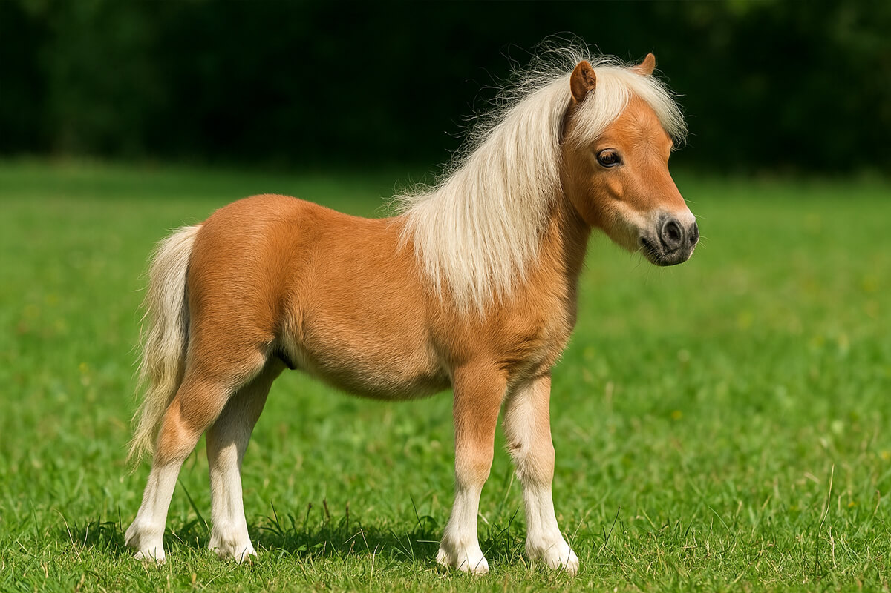
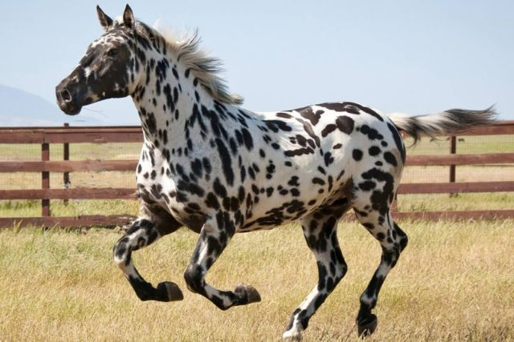
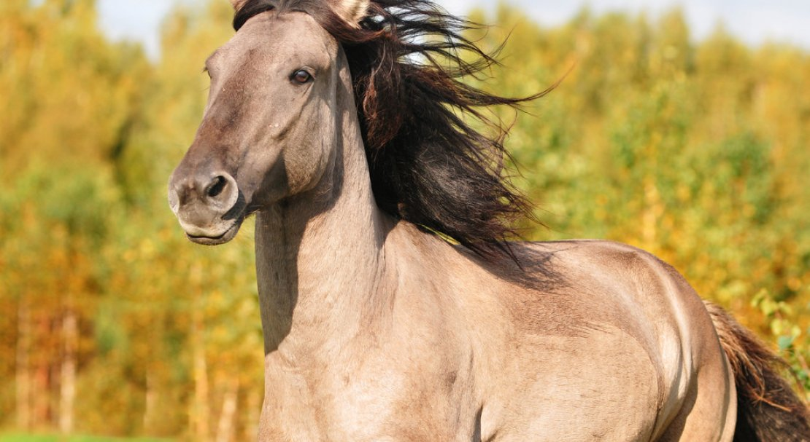

Интерактивная карта пород
Кликните на область с интересующей вас породой:



Подсказка: наведите курсор на картинку, чтобы увидеть области для клика.
1. Фалабелла — карманная лошадка
Изображение фалабеллы:
Описание: Фалабелла — это порода, которая поражает своими миниатюрными размерами. Высота в холке у взрослой особи не превышает 70–80 см, а вес — около 40–60 кг. Эти лошади настолько малы, что их часто держат как домашних питомцев, сравнимых по размеру с крупной собакой.
История породы началась в Аргентине в середине XIX века, когда семья Фалабелла начала селекционный отбор самых маленьких особей среди местных пони. Сегодня фалабеллы сохранили пропорции настоящих лошадей — у них изящная голова, стройные ноги и гармоничное телосложение. Они умны, дружелюбны и отлично поддаются дрессировке.
Несмотря на рост, фалабеллы могут перевозить грузы до 30–40 кг, а некоторые взрослые мужчины даже катаются на них верхом (правда, только в качестве шутки). Эти лошадки очень энергичны и нуждаются в движении, но их содержание требует особого внимания: из-за миниатюрного размера они более уязвимы к холоду и травмам.
2. Кнабструппер — датский «тигр»
Изображение кнабструппера:
Описание: Кнабструппер — порода, которую невозможно спутать ни с какой другой благодаря её уникальному окрасу. Корпус этих лошадей покрыт тёмными пятнами на светлом фоне, напоминающими тигриный рисунок. Причём окрас не статичен — он меняется в зависимости от сезона и возраста животного.
Порода была выведена в Дании в начале XX века путём скрещивания местных кобыл с пятнистыми лошадьми из Испании. Со временем кнабструпперы завоевали популярность не только благодаря внешности, но и отличным спортивным качествам. Они используются в выездке, конкуре и драйвинге.
У этих лошадей спокойный, уравновешенный характер, они легко обучаются и имеют хорошую память. Интересно, что пятнистость у кнабструпперов не является доминантным признаком — чтобы получить жеребёнка с «тигриным» узором, оба родителя должны быть носителями соответствующего гена. Именно поэтому каждая лошадь этой породы уникальна, и найти двух одинаковых особей практически невозможно.
3. Башкирская кудрявая — лошадь с волнистой шерстью
Изображение башкирской кудрявой:
Описание: Башкирская кудрявая (или американская кудрявая лошадь) — это порода, главная особенность которой заключается в волнистой, кудрявой шерсти. Зимой животные покрываются густым, плотным завитком, напоминающим овечью шерсть, а к лету волосы выпрямляются, оставляя лишь лёгкую волнистость на гриве и хвосте.
Происхождение породы до сих пор остаётся загадкой. Считается, что её предки попали в Северную Америку из Европы или Азии, но достоверных данных нет. Современная история кудрявых лошадей началась в 1890-х годах в штате Невада, где их обнаружили у индейцев племени шошонов.
Кудрявые лошади обладают гипоаллергенной шерстью, что делает их идеальными компаньонами для людей с аллергией на лошадиный волос. У них очень спокойный и дружелюбный нрав, они легко поддаются обучению и активно используются в иппотерапии. Кроме того, эта порода очень вынослива и неприхотлива в содержании — они могут пастись на скудных пастбищах и не требуют особого ухода за шерстью, которая сама сбрасывается и обновляется дважды в год.
Общая дополнительная информация
Полезные ресурсы о лошадях и породах:
- Породы лошадей на Википедии
- Horse Breeds List — каталог пород (англ.)
- Equine World — всё о лошадях (англ.)
- The Spruce Pets — породы лошадей (англ.)
- Pet Health Network — здоровье лошадей (англ.)